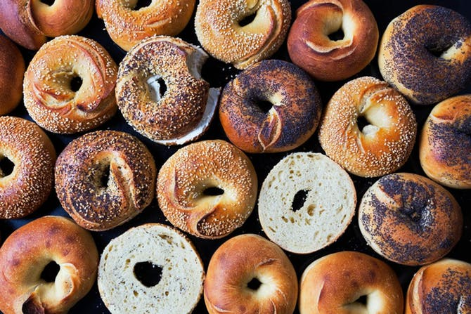

Photo Gallery
-
Locations
Photo Gallery
-
Locations
Everything About Bagels

People have been making bread for many years, however in the 16th century bread was perfected. It was at this time in Krakow, Poland that the bagel was invented.
Click on the Poland flag to learn more about the history of bagels!
The Process of Making Bagels
These are the important steps to create a bagel from scratch
- Get the proper ingredients - water, salt, flour, and yeast
- The design - Not only is the round shape neccisary, other important characteristics of bagels include texture, density, flavor, and value
- Proofing the yeast and cooling - this is important so the dough rises enough, but also does not rise too much
- Baking - The correct tempature and time for baking
Video